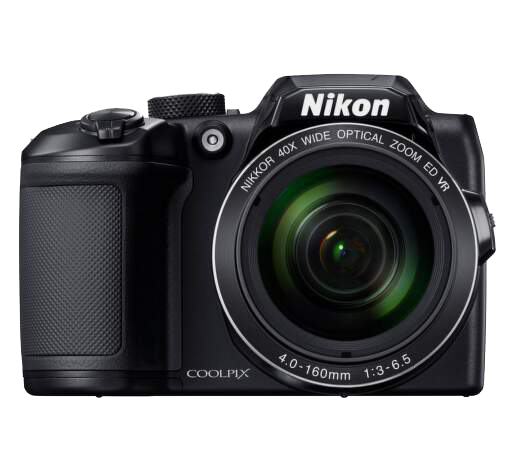
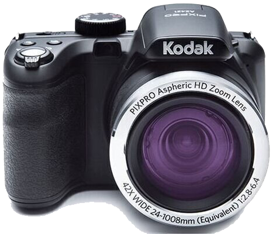
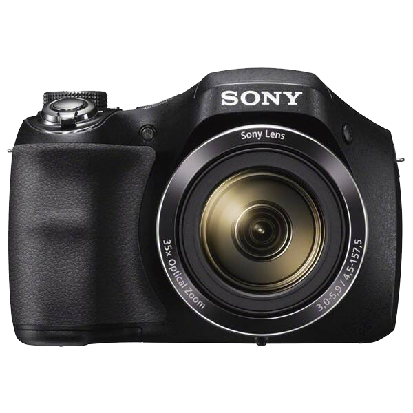
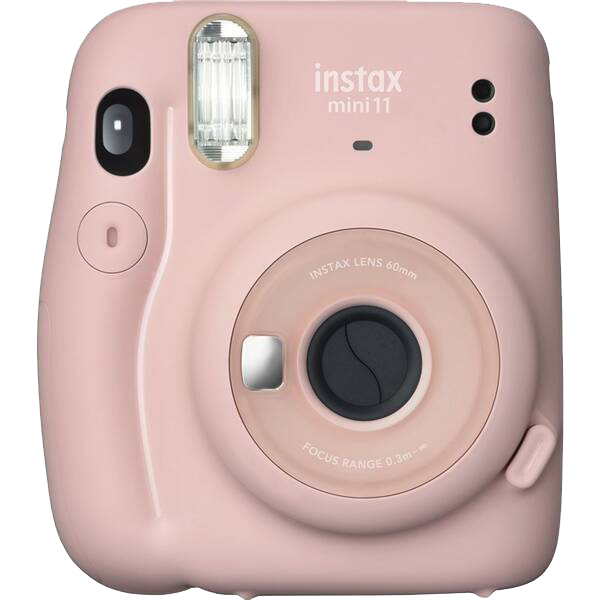

Digitálny fotoaparát Panasonic Lumix DMC-FZ300EP-K čierny
digitálny ultrazoom, 12 Mpx snímač MOS, objektív 25 – 600 mm so svetelnosťou f/2,8,
24× optický zoom, 4× digitálny zoom, 4K video (3840 × 2160),
optická stabilizácia, Wi-Fi, USB, HDMI,
slot na kartu SD/SDHC/SDXC, citlivosť ISO 100 až 6 400,
3'' výklopný LCD displej, elektronický hľadáčik, integrovaný blesk,
sánky pre externý blesk, zdierka pre externý mikrofón,
ultrasonické ostrenie, hmotnosť: 691 g, rozmery 132 × 92 × 117 mm
419 €

NIKON COOLPIX B500 ČIERNY
Celkový počet megapixelov: 16.76 Mpx, Ohnisková vzdialenosť: 4 - 160, Efektívny počet pixelov: 16 Mpx, Uhlopriečka: 3 ", Wi-Fi: Áno, GPS: Nie, 3D kompatibilita: Nie, Max.rozlíš.videa: 1920x1080, Vodotesný: Nie, Optický zoom: 40, Rozlíšenie: 16 mpx, Stabilizácia obrazu: duálna, Hľadáčik: Nie, Min.ohnisková vzdialenosť: 160 mm
259 €

KODAK Astro Zoom AZ422 Čierna
S perfektne sediacim telom do ruky, nabitými funkciami, 42x optickým zoomom a 20MPix snímačom sa stane neoceniteľným spoločníkom na veľké cesty aj kratšie výlety. S kreatívnymi režimami, WiFi konektivitou a možnosťou diaľkového ovládania cez aplikáciu v telefóne, záznamom HD videa, veľkým 3“ LCD displejom a množstvom rozumných užívateľských nastavení, robia z fotografovania opäť zábavu.
213,74 €

Digitálny fotoaparát Sony Cyber-shot DSC-H300 čierny
digitálny kompakt, 20 Mpx snímač Super HAD CCD,
video HD, 35× zoom (4,5 – 157,5 mm),
svetelnosť f/3.5 až f/5.9, optická stabilizácia,
citlivosť ISO až 3 200, 3" TFT LCD displej
189 €

Digitálny fotoaparát Fujifilm Instax mini 11 ružový
instantný fotoaparát s okamžitou tlačou, 60 mm objektív,
svetelnosť f/12.7, citlivosť ISO 800, rozmery fotky 86 × 54 mm,
režim Automatic Exposure, Selfie Mode,
automatický blesk (dosah 30 cm až 2,7 m), automatické vypnutie po 5 min nečinnosti,
v balení 2 druhy vymeniteľného tlačidla spúšte (Glow a Jewel) a farebne zladený popruh s pútkom na ruku